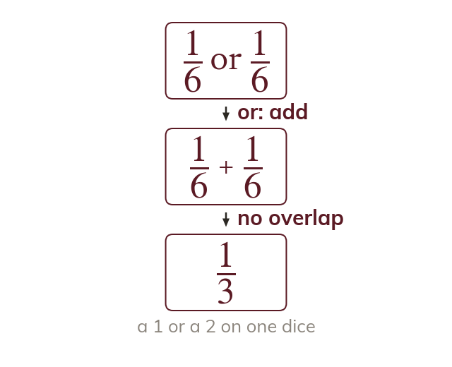
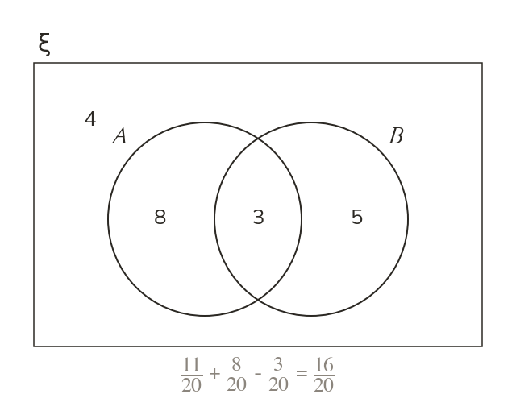
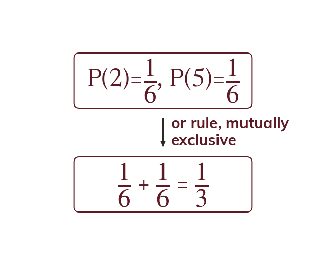
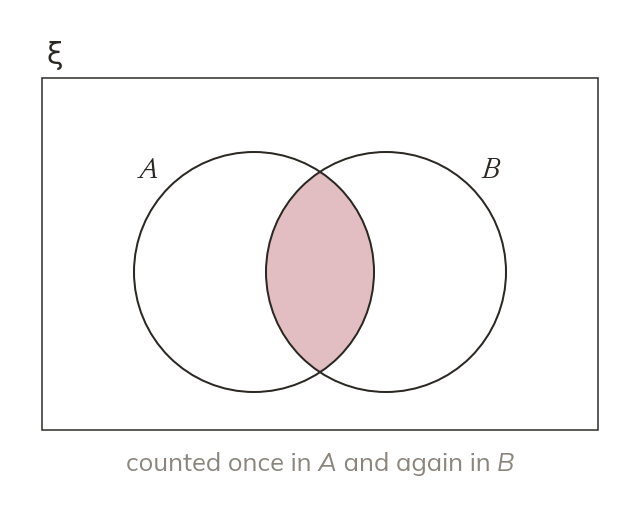
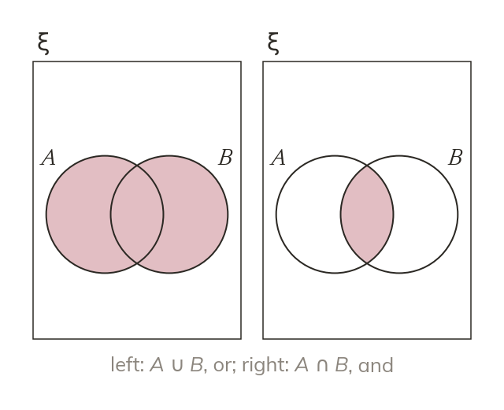
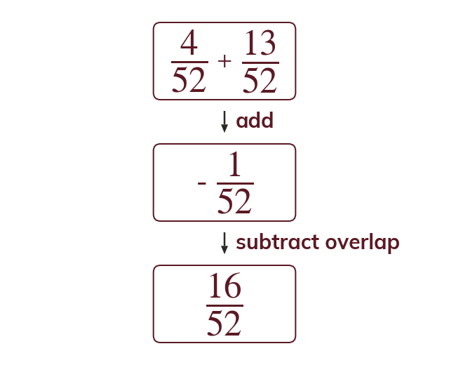

Mutually exclusive or
For mutually exclusive events, P(A or B) = P(A) + P(B). There is no overlap to worry about, since the events cannot both happen.
The and-rule multiplies; the or-rule adds – but only once the overlap between two events has been accounted for. Today is about knowing when to subtract that overlap, and when there is none to subtract.
Work down the page at your own pace. Write every answer in your book first, then click to check it.
Read each card, then follow the worked examples one step at a time.

For mutually exclusive events, P(A or B) = P(A) + P(B). There is no overlap to worry about, since the events cannot both happen.

When events can both happen, the overlap is counted twice. So P(A or B) = P(A) + P(B) - P(A and B).

Pick an answer. If it's wrong, the feedback tells you which mistake it was.
Read each card, then follow the worked examples one step at a time.

Where two events CAN both happen, adding P(A) and P(B) double-counts the overlap. Subtracting P(A and B) once removes exactly that double-count.

In set notation, "or" is the union, A union B. The overlap is the intersection. Read for "and" versus "or" to choose the rule.

Pick an answer. If it's wrong, the feedback tells you which mistake it was.
Finished? Next lesson: 9.16.4 Tree Diagrams.
Log in, then search for a code to practise that skill.
Videos, worksheets and more on each part of this lesson.